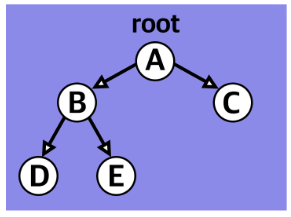
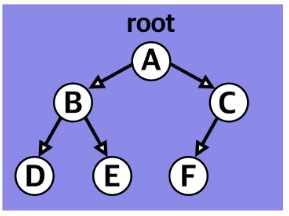
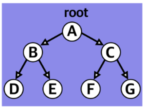

그래프의 여러 구조 중 단방향 그래프의 한 구조로 하나의 뿌리로부터 가지가 사방으로 뻗은 형태가 나무와 닮아 있다고 해서 트리 구조라고 부른다.
이 트리 구조는 데이터가 바로 아래에 있는 하나 이상의 데이터에 단방향으로 연결된 계층적 자료구조이며 하나의 데이터 아래에 여러 개의 데이터가 존재할 수 있는 비선형 구조이다.
트리 구조는 루트(Root) 라는 하나의 꼭짓점 데이터를 시작으로 여러 개의 데이터를 간선(edge)으로 연결한다.
각 데이터를 노드(Node)라고 하며 두 개의 노드가 상하 계층으로 연결되면 부모/자식 관계를 가진다.
노드는 깊이(depth), 레벨(level), 높이(height)를 가지고 있으며 해당 노드의 깊이, 레벨, 높이를 측정할 수 있다.
트리 구조에서는 루트로부터 하위 계층의 특정 노드까지의 깊이(depth)를 표현할 수 있다.
루트 노드는 지면에 있는 것처럼 깊이가 0이며 특정 노드에 도달하기 위해 거쳐야 하는 간선의 개수만큼 숫자가 늘어난다.
트리 구조에서 같은 깊이를 가지고 있는 노드를 묶어서 레벨(level)로 표현할 수 있다.
깊이가 0인 루트 노드의 레벨은 1이며 깊이가 1씩 증가할 때마다 레벨도 1씩 증가한다.
같은 레벨에 나란히 있는 노드를 형제 노드(Sibling Node) 라고 한다.
트리 구조에서 리프 노드를 기준으로 루트까지의 높이(height)를 표현할 수 있다.
리프 노드의 높이를 0으로 놓으며 부모 노드는 가장 높은 자식 노드의 높이에 + 1한 값을 높이로 가진다.
자식이 없는 노드는 나무의 잎과 같다고 하여 리프 노드(Leaf Node)라고 부른다.
루트에서 뻗어 나오는 큰 트리의 내부에 트리 구조를 갖춘 작은 트리를 서브 트리 라고 부른다.
트리 구조는 편리한 구조를 전시하는 것 외에 효율적인 탐색을 위해 사용하기도 한다.
많은 트리의 구조 중 가장 간단하고 많이 사용하는 이진 트리(binary tree)와 이진 탐색 트리(binary search tree)에 대해서만 설명한다.
이진 트리(Binary tree)는 자식 노드가 최대 두 개인 노드들로 구성된 트리이다.
이 두 개의 자식 노드는 왼쪽 자식 노드와 오른쪽 자식 노드로 나눌 수 있다.
이진 트리는 자료의 삽입, 삭제 방법에 따라 정 이진 트리(Full binary tree), 완전 이진 트리(Complete binary tree), 포화 이진 트리(Perfect binary tree)로 나눈다.
정 이진 트리(Full binary tree)는 각 노드가 0 개 혹은 2 개의 자식 노드를 갖는다.

완전 이진 트리(Complete binary tree)는 마지막 레벨을 제외한 모든 노드가 가득 차 있어야 하고 마지막 레벨의 노드는 전부 차 있지 않아도 되지만 왼쪽이 채워져야 한다.

포화 이진 트리(Perfect binary tree)는 정 이진 트리이면서 완전 이진 트리인 경우로 모든 리프 노드의 레벨이 동일하고 모든 레벨이 가득 채워져 있는 트리이다.

이진 탐색 트리(Binary Search Tree)는 모든 왼쪽 자식의 값이 루트나 부모보다 작고 모든 오른쪽 자식의 값이 루트나 부모보다 큰 값을 가지는 특징이 있다.
특정 목적을 위해 트리의 모든 노드를 한 번씩 방문하는 것을 트리 순회라고 한다.
트리를 순회할 수 있는 세 가지 방법은 전위 순회, 중위 순회, 후위 순회이다.
순회 방식과는 논외로 트리 구조에서 노드를 순차적으로 조회할 때의 순서는 항상 왼쪽부터 오른쪽이다.
전위 순회(preorder traverse)는 가장 먼저 루트 노드부터 방문한다.
루트에서 시작해 왼쪽의 노드들을 순차적으로 둘러본 뒤 왼쪽의 노드 탐색이 끝나면 오른쪽 노드를 탐색한다.
중위 순회(inorder traverse)는 루트를 가운데에 두고 순회한다.
제일 왼쪽 끝에 있는 노드부터 순회하기 시작하여, 루트를 기준으로 왼쪽에 있는 노드의 순회가 끝나면 루트를 거쳐 오른쪽에 있는 노드로 이동하여 마저 탐색한다.
후위 순회(postorder traverse)는 루트를 가장 마지막에 순회한다.
제일 왼쪽 끝에 있는 노드부터 순회하기 시작하여 루트를 거치지 않고 오른쪽으로 이동해 순회한 뒤 제일 마지막에 루트를 탐색한다.